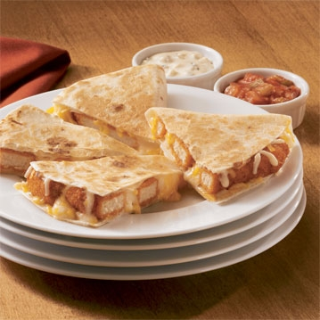

Chicken Stuffed Quesadilla Recipe

- 20 frozen Buffalo Style Chicken Breast Tenders
- 4 flour tortillas (8 inch)
- 2 cups shredded Cheddar or Monterey Jack cheese (2 cups = 8 oz)
- No-Stick Cooking Spray
- Blue cheese dressing, optional
- Prepare chicken tenders according to package directions.
- Sprinkle half of 1 tortilla with 1/4 cup cheese. Top with 5 hot
tenders and another 1/4 cup cheese. Fold tortilla in half over filling.
Repeat with remaining ingredients.
- Spray large skillet with cooking spray; heat over medium heat.
Add each quesadilla and cook about 1 minute per side or until tortilla
is golden brown and cheese melts.
- Cut quesadillas into wedges. Serve with blue cheese dressing, if desired.